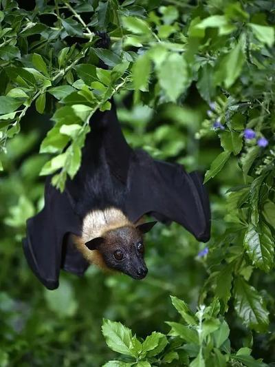

动物进化与生态功能基因组学
具体研究方向包括：(1）结合比较基因组学、细胞功能实验和动物实验解析动物表型的遗传学基础;（2）通过对感觉基因(Sensory genes)的比较分析揭示感觉系统在动物生态适应中的重要意义。
- 结合比较基因组学、细胞功能实验和动物实验解析动物表型的遗传学基础
结合比较基因组学、细胞功能实验和动物实验的多种研究方法，能够为解析动物表型的遗传学基础提供新的视角。
比较基因组学通过分析物种间的基因组差异，揭示了关键基因和调控元件如何影响目标物种的表型进化与生态适应。
细胞功能和动物实验能够验证候选基因和调控元件如何在功能水平上影响动物的表型。
课题组将以蝙蝠和啮齿类等小型哺乳动物为研究对象，关注其独特的表型演化，通过多学科交叉研究揭示其表型演化的分子机制。

- 通过对感觉基因(Sensory genes)的比较分析揭示感觉系统在动物生态适应中的重要意义
动物感觉系统响应外界环境的变化，会产生感官适应。不同物种的感觉系统存在显著差异，这些差异直接影响了动物对环境的感知和反应能力。
例如，味觉和嗅觉的适应性演化能够帮助动物在特定栖息地中更有效地觅食、避敌或繁殖。
课题组将通过比较不同生态环境下物种的感觉基因，鉴定出这些基因的关键变异，以及这些变异如何促成表型的形成。研究将揭示动物感觉系统的演化机制，还为理解生物多样性及其维持提供重要的理论基础。